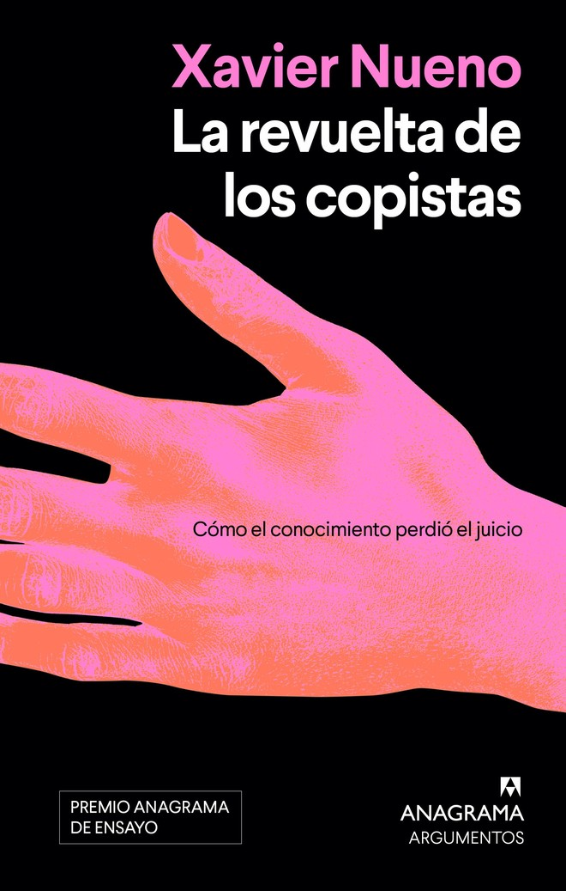

🏆 54º Premio Anagrama de Ensayo 2026 (10.000 €, entre 340 originales) · Anagrama, col. Argumentos · original en castellano
Las tecnológicas se han apropiado del acervo que custodiaban las bibliotecas y ahora nos lo venden por suscripción como si fuera conocimiento nuevo. Nueno cuenta la privatización del saber a través de su fuerza de trabajo: copistas, estenógrafos, bibliotecarios, archiveros, programadores… y algún picapleitos. Su propuesta política: si la máquina se alimentó de nuestra memoria colectiva, los modelos de lenguaje deberían ser públicos.
El País (20 oct): una alerta sobre la privatización del saber en la IA; incluye la historia del trabajo no pagado de las mujeres en las bibliotecas. Ganó entre 340 originales de 24 países; jurado: Jordi Gracia, Pau Luque, Daniel Rico, Remedios Zafra, Silvia Sesé e Isabel Obiols. ⭐ Goodreads y reseñas críticas: no encontrado (salió ayer).
Es de tu trabajo: de dónde salen los datos de la IA, quién se los apropia y qué pasa con el trabajo intelectual. Te da argumentos e historia para tus formaciones, más allá del hype y del apocalipsis. Ensayo, no ficción, pero con humor y con mirada de futuro del trabajo.